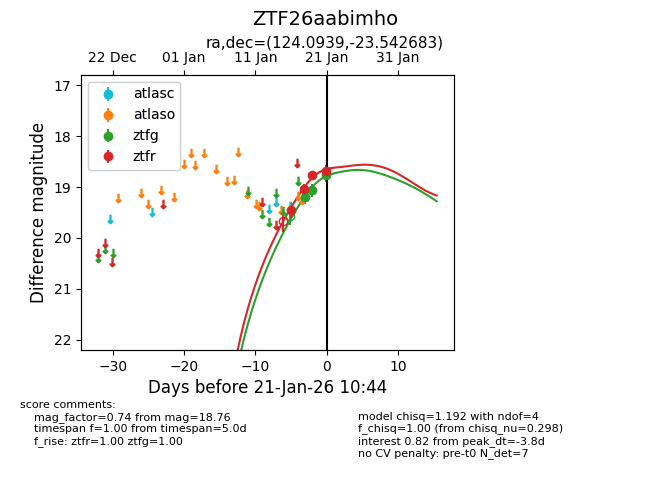
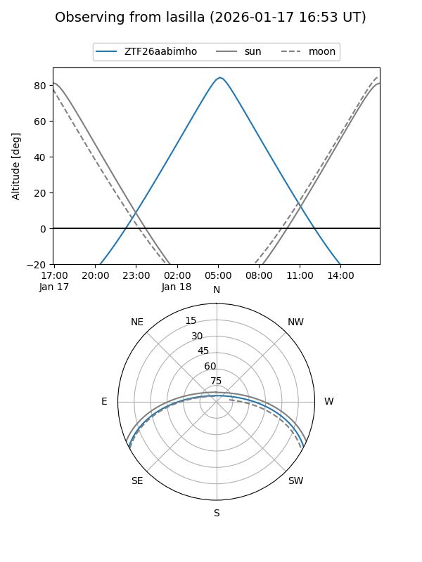
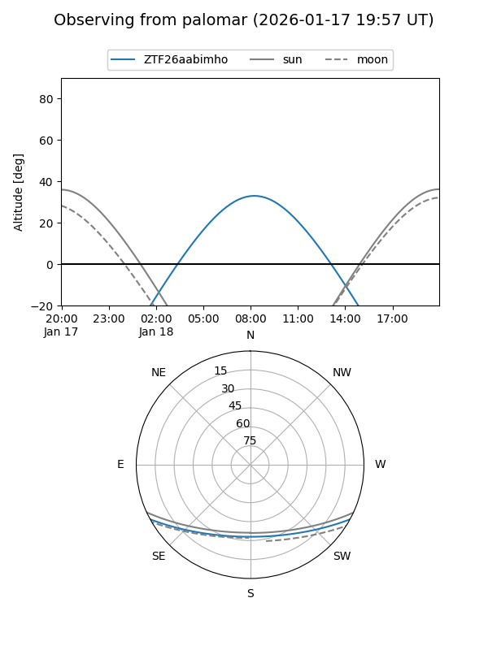
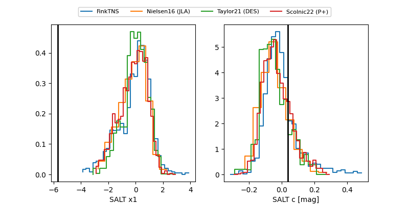

ZTF26aabimho
Target ZTF26aabimho at 2026-01-21 09:16
Aliases and brokers:
FINK: link
Lasair: link
ALeRCE: link
alt names
ZTF26aabimho (ztf,fink_ztf)
Coordinates:
equatorial (ra, dec) = 124.0939,-23.54268
equatorial (HMS+DMS) = 08:16:22.53,-23:32:33.66
galactic (l, b) = (243.6079,+6.50987)
Flags:
Photometry:
last ztfg=19.07, ztfr=18.69
2 ztfg, 4 ztfr detections
Lightcurve

Visibility


Additional plots
